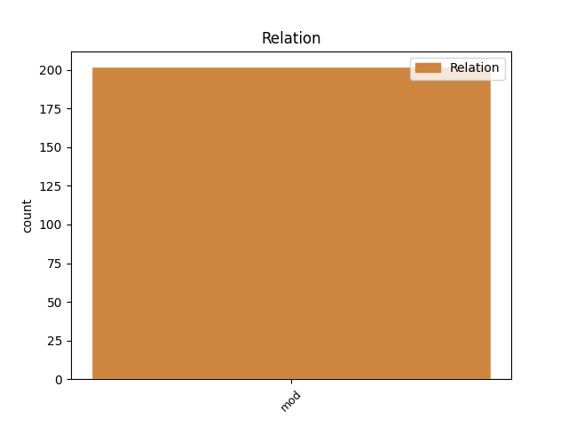
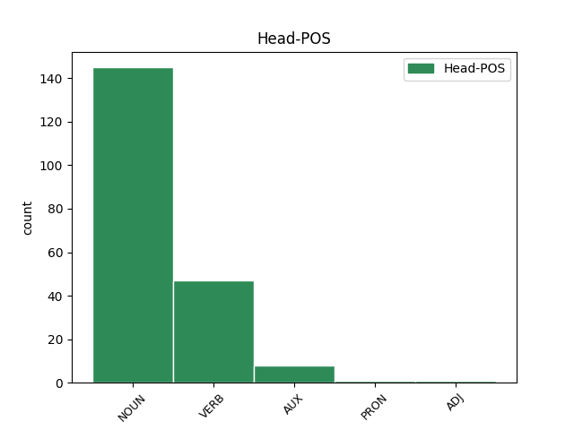
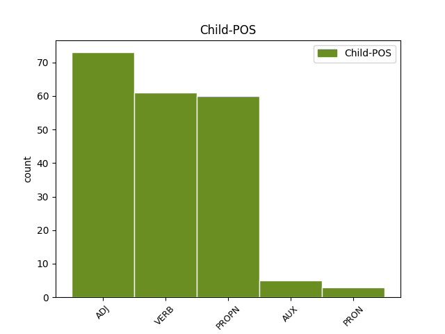

Distribution of features within this leaf



Agreement Rules sorted by frequency.
- When the dependent token is the modifer(mod) of the head token, and the head token is NOUN and the dependent token is ADJ.
1 Я _ _ _ _ 0 _ _ _
2 не _ _ _ _ 0 _ _ _
3 дышу _ _ _ _ 0 _ _ _
4 , _ _ _ _ 0 _ _ _
5 а _ _ _ _ 0 _ _ _
6 пью _ _ _ _ 0 _ _ _
7 благоуханье _ _ _ _ 0 _ _ _
8 Моей _ _ _ _ 0 _ _ _
9 земли земля NOUN _ Animacy=Inan|Case=Gen|Gender=Fem|Number=Sing 0 _ _ _
10 равнинной равнинный ADJ _ Case=Ins|Degree=Pos|Gender=Fem|Number=Sing 9 mod _ _
11 и _ _ _ _ 0 _ _ _
12 лесной _ _ _ _ 0 _ _ _
13 . _ _ _ _ 0 _ _ _
1 Японой _ _ _ _ 0 _ _ _
2 Буддын _ _ _ _ 0 _ _ _
3 шажанай шажан NOUN _ Animacy=Anim|Case=Dat|Gender=Fem|Number=Sing 0 _ _ _
4 Сока Сока PROPN _ Case=Nom|Number=Sing|Person=3 3 mod _ _
5 Гаккай _ _ _ _ 0 _ _ _
6 байгуулга _ _ _ _ 0 _ _ _
7 Сингапурта _ _ _ _ 0 _ _ _
8 олон _ _ _ _ 0 _ _ _
9 хүн _ _ _ _ 0 _ _ _
10 һургадаг _ _ _ _ 0 _ _ _
11 болоод _ _ _ _ 0 _ _ _
12 тэдэнь _ _ _ _ 0 _ _ _
13 ехэнхидээ _ _ _ _ 0 _ _ _
14 Хитад _ _ _ _ 0 _ _ _
15 яһатанууд _ _ _ _ 0 _ _ _
16 байдаг _ _ _ _ 0 _ _ _
17 . _ _ _ _ 0 _ _ _
1 Ябадалай _ _ _ _ 0 _ _ _
2 үрнил _ _ _ _ 0 _ _ _
3 Өөрынгөө _ _ _ _ 0 _ _ _
4 нүхэр _ _ _ _ 0 _ _ _
5 Энкидугэй _ _ _ _ 0 _ _ _
6 үхэлдэ _ _ _ _ 0 _ _ _
7 сошордоһон _ _ _ _ 0 _ _ _
8 Урукай _ _ _ _ 0 _ _ _
9 Гильгамеш _ _ _ _ 0 _ _ _
10 хаан _ _ _ _ 0 _ _ _
11 үхэшэгүй _ _ _ _ 0 _ _ _
12 мүнхын _ _ _ _ 0 _ _ _
13 эрэлдэ _ _ _ _ 0 _ _ _
14 Шумер _ _ _ _ 0 _ _ _
15 « _ _ _ _ 0 _ _ _
16 мүнөөнэй _ _ _ _ 0 _ _ _
17 Ирик _ _ _ _ 0 _ _ _
18 » _ _ _ _ 0 _ _ _
19 руу _ _ _ _ 0 _ _ _
20 ябаһан _ _ _ _ 0 _ _ _
21 Гильгамеш _ _ _ _ 0 _ _ _
22 сэсэн сэ VERB _ Mood=Ind|Number=Sing|Person=3|Tense=Past|VerbForm=Fin 30 mod _ _
23 мэргэн _ _ _ _ 0 _ _ _
24 бурханиие _ _ _ _ 0 _ _ _
25 туһаламжатайгаар _ _ _ _ 0 _ _ _
26 үерые _ _ _ _ 0 _ _ _
27 тэсбэрилэн _ _ _ _ 0 _ _ _
28 шадаһан _ _ _ _ 0 _ _ _
29 Утнапиштимтэй _ _ _ _ 0 _ _ _
30 уулзаһан уулзаһ VERB _ Mood=Ind|Number=Sing|Person=3|Tense=Past|VerbForm=Fin 0 _ _ _
31 . _ _ _ _ 0 _ _ _
1 Эдэнэй _ _ _ _ 0 _ _ _
2 тоодо _ _ _ _ 0 _ _ _
3 « _ _ _ _ 0 _ _ _
4 Кочующий КОЧУЮЩИЙ VERB _ Aspect=Imp|Case=Nom|Gender=Masc|Number=Sing|Tense=Pres|VerbForm=Part|Voice=Act 5 mod _ _
5 фронт ФРОНТ NOUN _ Animacy=Inan|Case=Nom|Gender=Masc|Number=Sing 0 _ _ _
6 » _ _ _ _ 0 _ _ _
7 , _ _ _ _ 0 _ _ _
8 « _ _ _ _ 0 _ _ _
9 Открытие _ _ _ _ 0 _ _ _
10 » _ _ _ _ 0 _ _ _
11 , _ _ _ _ 0 _ _ _
12 « _ _ _ _ 0 _ _ _
13 Горький _ _ _ _ 0 _ _ _
14 можжевельник _ _ _ _ 0 _ _ _
15 » _ _ _ _ 0 _ _ _
16 , _ _ _ _ 0 _ _ _
17 « _ _ _ _ 0 _ _ _
18 В _ _ _ _ 0 _ _ _
19 ночь _ _ _ _ 0 _ _ _
20 лунного _ _ _ _ 0 _ _ _
21 затмения _ _ _ _ 0 _ _ _
22 » _ _ _ _ 0 _ _ _
23 , _ _ _ _ 0 _ _ _
24 Нет _ _ _ _ 0 _ _ _
25 чужой _ _ _ _ 0 _ _ _
26 земли _ _ _ _ 0 _ _ _
27 » _ _ _ _ 0 _ _ _
28 болон _ _ _ _ 0 _ _ _
29 « _ _ _ _ 0 _ _ _
30 Батожабай _ _ _ _ 0 _ _ _
31 » _ _ _ _ 0 _ _ _
32 гэhэн _ _ _ _ 0 _ _ _
33 документальна _ _ _ _ 0 _ _ _
34 кино _ _ _ _ 0 _ _ _
35 . _ _ _ _ 0 _ _ _
1 Цианай _ _ _ _ 0 _ _ _
2 бактеринуудынь _ _ _ _ 0 _ _ _
3 хүрээлэн _ _ _ _ 0 _ _ _
4 Наранай _ _ _ _ 0 _ _ _
5 эршэм _ _ _ _ 0 _ _ _
6 хүсэн хү VERB _ Aspect=Perf|Evident=Nfh|Mood=Ind|Number=Sing|Person=3|Polarity=Pos|Tense=Past 17 mod _ _
7 , _ _ _ _ 0 _ _ _
8 нүүрһэнхүшэлэй _ _ _ _ 0 _ _ _
9 хии _ _ _ _ 0 _ _ _
10 болон _ _ _ _ 0 _ _ _
11 уһые _ _ _ _ 0 _ _ _
12 ашаглажа _ _ _ _ 0 _ _ _
13 өөрһэдөө _ _ _ _ 0 _ _ _
14 тэжээллэг _ _ _ _ 0 _ _ _
15 бодосые _ _ _ _ 0 _ _ _
16 үйлэдбэрилхэ _ _ _ _ 0 _ _ _
17 болоо бол AUX _ Gender=Neut|Mood=Ind|Number=Sing|Person=3|Polarity=Pos|Tense=Fut|VerbForm=Fin|Voice=Act 0 _ _ _
18 . _ _ _ _ 0 _ _ _
1 Энэ _ _ _ _ 0 _ _ _
2 үедэ _ _ _ _ 0 _ _ _
3 тэрэ _ _ _ _ 0 _ _ _
4 сониной _ _ _ _ 0 _ _ _
5 сурбалжалагша _ _ _ _ 0 _ _ _
6 болоо бол AUX _ Mood=Cnd|Number=Sing|Person=3|VerbForm=Conv 15 mod _ _
7 , _ _ _ _ 0 _ _ _
8 ирагуу _ _ _ _ 0 _ _ _
9 найрагшын _ _ _ _ 0 _ _ _
10 , _ _ _ _ 0 _ _ _
11 уран _ _ _ _ 0 _ _ _
12 зохеолшын _ _ _ _ 0 _ _ _
13 абьяасынь _ _ _ _ 0 _ _ _
14 элирээ _ _ _ _ 0 _ _ _
15 бэлэй бэл VERB _ Aspect=Imp|Mood=Imp|Number=Sing|Person=2|VerbForm=Fin 0 _ _ _
16 . _ _ _ _ 0 _ _ _
1 Ургамалнуудаар _ _ _ _ 0 _ _ _
2 , _ _ _ _ 0 _ _ _
3 жэжэ _ _ _ _ 0 _ _ _
4 шумуулнуудаар _ _ _ _ 0 _ _ _
5 , _ _ _ _ 0 _ _ _
6 тэдэнэй тэдэ PRON _ Case=Ill|Number=Plur|PronType=Dem 7 mod _ _
7 үндэгэнүүдээр үндэгэнү NOUN _ Case=Nom|Number=Plur 0 _ _ _
8 хооллодог _ _ _ _ 0 _ _ _
9 . _ _ _ _ 0 _ _ _
1 XI _ _ _ _ 0 _ _ _
2 Олимпиадын _ _ _ _ 0 _ _ _
3 наадан _ _ _ _ 0 _ _ _
4 ( _ _ _ _ 0 _ _ _
5 1936 1936 ADJ _ Animacy=Inan|Case=Nom|Gender=Masc|Number=Sing 6 mod _ _
6 он ОН PRON _ Case=Nom|Gender=Masc|Number=Sing|Person=3 0 _ _ _
7 ) _ _ _ _ 0 _ _ _
8 . _ _ _ _ 0 _ _ _
1 Дифференциал _ _ _ _ 0 _ _ _
2 болон _ _ _ _ 0 _ _ _
3 интеграл _ _ _ _ 0 _ _ _
4 тоосоололой тоосоололый ADJ _ Case=Ins|Degree=Pos|Gender=Fem|Number=Sing 5 mod _ _
5 зохёогшодой зохёогшода ADJ _ Animacy=Inan|Case=Ins|Gender=Fem|Number=Sing 0 _ _ _
6 нэгэн _ _ _ _ 0 _ _ _
7 . _ _ _ _ 0 _ _ _
1 Зүрхэниинь _ _ _ _ 0 _ _ _
2 өөрөө _ _ _ _ 0 _ _ _
3 өөрөөһөө _ _ _ _ 0 _ _ _
4 сэрэл _ _ _ _ 0 _ _ _
5 үүсхэхэ _ _ _ _ 0 _ _ _
6 шадабаритай _ _ _ _ 0 _ _ _
7 пейсмакер _ _ _ _ 0 _ _ _
8 эсһээ _ _ _ _ 0 _ _ _
9 тогтохо _ _ _ _ 0 _ _ _
10 болоод _ _ _ _ 0 _ _ _
11 энэнь _ _ _ _ 0 _ _ _
12 зүрхэнэй _ _ _ _ 0 _ _ _
13 тогтомол _ _ _ _ 0 _ _ _
14 хэмэнэл _ _ _ _ 0 _ _ _
15 гү _ _ _ _ 0 _ _ _
16 , _ _ _ _ 0 _ _ _
17 али _ _ _ _ 0 _ _ _
18 сохилтые сохилтые ADJ _ Case=Nom|Number=Plur 19 mod _ _
19 үүсхэдэг үүсхэдэ VERB _ Case=Nom|Number=Plur 0 _ _ _
20 шухала _ _ _ _ 0 _ _ _
21 эс _ _ _ _ 0 _ _ _
22 юм _ _ _ _ 0 _ _ _
23 . _ _ _ _ 0 _ _ _
Disagree Examples:
1 1787 _ _ _ _ 0 _ _ _
2 ондо _ _ _ _ 0 _ _ _
3 баталагдаһан _ _ _ _ 0 _ _ _
4 Үндэһэн Үндэһ PROPN _ Case=Gen|Number=Sing 5 mod _ _
5 хуулиин хуули NOUN _ Case=Gen|Number=Plur 0 _ _ _
6 ёһoop _ _ _ _ 0 _ _ _
7 АНУ _ _ _ _ 0 _ _ _
8 - _ _ _ _ 0 _ _ _
9 нь _ _ _ _ 0 _ _ _
10 холбооной _ _ _ _ 0 _ _ _
11 улас _ _ _ _ 0 _ _ _
12 боложо _ _ _ _ 0 _ _ _
13 анхалан _ _ _ _ 0 _ _ _
14 байһан _ _ _ _ 0 _ _ _
15 13 _ _ _ _ 0 _ _ _
16 можо _ _ _ _ 0 _ _ _
17 улас _ _ _ _ 0 _ _ _
18 дээрэ _ _ _ _ 0 _ _ _
19 19 _ _ _ _ 0 _ _ _
20 , _ _ _ _ 0 _ _ _
21 20-р _ _ _ _ 0 _ _ _
22 зуунай _ _ _ _ 0 _ _ _
23 туршада _ _ _ _ 0 _ _ _
24 шэнээр _ _ _ _ 0 _ _ _
25 37 _ _ _ _ 0 _ _ _
26 можо _ _ _ _ 0 _ _ _
27 улас _ _ _ _ 0 _ _ _
28 нэмэгдэһэн _ _ _ _ 0 _ _ _
29 тула _ _ _ _ 0 _ _ _
30 тус _ _ _ _ 0 _ _ _
31 улас _ _ _ _ 0 _ _ _
32 Хойто _ _ _ _ 0 _ _ _
33 Америкын _ _ _ _ 0 _ _ _
34 ехэнхиие _ _ _ _ 0 _ _ _
35 эзэлһэн _ _ _ _ 0 _ _ _
36 томохон _ _ _ _ 0 _ _ _
37 гүрэн _ _ _ _ 0 _ _ _
38 болон _ _ _ _ 0 _ _ _
39 үргэжэбэ _ _ _ _ 0 _ _ _
40 . _ _ _ _ 0 _ _ _
1 1898 _ _ _ _ 0 _ _ _
2 ондо _ _ _ _ 0 _ _ _
3 Минск _ _ _ _ 0 _ _ _
4 хотодо _ _ _ _ 0 _ _ _
5 байхадаа _ _ _ _ 0 _ _ _
6 Ородой _ _ _ _ 0 _ _ _
7 социал _ _ _ _ 0 _ _ _
8 - _ _ _ _ 0 _ _ _
9 демократ _ _ _ _ 0 _ _ _
10 намые намый ADJ _ Case=Nom|Degree=Pos|Number=Plur 11 mod _ _
11 байгуулба байгуулба NOUN _ Animacy=Inan|Case=Nom|Gender=Fem|Number=Sing 0 _ _ _
12 . _ _ _ _ 0 _ _ _
1 Буряад буряад NOUN _ Case=Nom|Number=Plur 0 _ _ _
2 Википеэди Википе PROPN _ Case=Ill|Number=Sing 1 mod _ _
3 — _ _ _ _ 0 _ _ _
4 буряад _ _ _ _ 0 _ _ _
5 хэлэнэй _ _ _ _ 0 _ _ _
6 нэбтэрхэй _ _ _ _ 0 _ _ _
7 толи _ _ _ _ 0 _ _ _
8 бэшэгынь _ _ _ _ 0 _ _ _
9 сүлөөтэ _ _ _ _ 0 _ _ _
10 агуулгатай _ _ _ _ 0 _ _ _
11 , _ _ _ _ 0 _ _ _
12 Creative _ _ _ _ 0 _ _ _
13 Commons _ _ _ _ 0 _ _ _
14 Attribution _ _ _ _ 0 _ _ _
15 - _ _ _ _ 0 _ _ _
16 ShareAlike _ _ _ _ 0 _ _ _
17 лицензитэй _ _ _ _ 0 _ _ _
18 бидэнэй _ _ _ _ 0 _ _ _
19 сайн _ _ _ _ 0 _ _ _
20 дүрын _ _ _ _ 0 _ _ _
21 оролсоотойгоор _ _ _ _ 0 _ _ _
22 баяшадаг _ _ _ _ 0 _ _ _
23 нэбтэрхэй _ _ _ _ 0 _ _ _
24 толи _ _ _ _ 0 _ _ _
25 юм _ _ _ _ 0 _ _ _
26 . _ _ _ _ 0 _ _ _
1 Газарзүй _ _ _ _ 0 _ _ _
2 Сингапурай сингапур PROPN _ Case=Ill|Number=Sing 3 mod _ _
3 аралнууд ара NOUN _ Case=Nom|Number=Plur 0 _ _ _
4 болон _ _ _ _ 0 _ _ _
5 уһан _ _ _ _ 0 _ _ _
6 зам _ _ _ _ 0 _ _ _
7 Сингапур _ _ _ _ 0 _ _ _
8 уласай _ _ _ _ 0 _ _ _
9 газар _ _ _ _ 0 _ _ _
10 нютагынь _ _ _ _ 0 _ _ _
11 Сингапур _ _ _ _ 0 _ _ _
12 арал _ _ _ _ 0 _ _ _
13 гэхэ _ _ _ _ 0 _ _ _
14 гол _ _ _ _ 0 _ _ _
15 арал _ _ _ _ 0 _ _ _
16 , _ _ _ _ 0 _ _ _
17 бусад _ _ _ _ 0 _ _ _
18 жаахан _ _ _ _ 0 _ _ _
19 62 _ _ _ _ 0 _ _ _
20 аралһаа _ _ _ _ 0 _ _ _
21 бүтэдэг _ _ _ _ 0 _ _ _
22 . _ _ _ _ 0 _ _ _
1 Гай _ _ _ _ 0 _ _ _
2 Октавиус _ _ _ _ 0 _ _ _
3 ( _ _ _ _ 0 _ _ _
4 юрэнь _ _ _ _ 0 _ _ _
5 Октавиан _ _ _ _ 0 _ _ _
6 нэрээрээ _ _ _ _ 0 _ _ _
7 ниитэдэ _ _ _ _ 0 _ _ _
8 алдартай _ _ _ _ 0 _ _ _
9 ба _ _ _ _ 0 _ _ _
10 " _ _ _ _ 0 _ _ _
11 Август _ _ _ _ 0 _ _ _
12 " _ _ _ _ 0 _ _ _
13 хэргэмые _ _ _ _ 0 _ _ _
14 35 _ _ _ _ 0 _ _ _
15 наһатайдаа _ _ _ _ 0 _ _ _
16 хүртөө _ _ _ _ 0 _ _ _
17 ) _ _ _ _ 0 _ _ _
18 МЭҮ _ _ _ _ 0 _ _ _
19 63 _ _ _ _ 0 _ _ _
20 ондо _ _ _ _ 0 _ _ _
21 түрэһэн _ _ _ _ 0 _ _ _
22 болоод _ _ _ _ 0 _ _ _
23 Римэй Рим PROPN _ Case=Ill|Number=Sing 27 mod _ _
24 улас _ _ _ _ 0 _ _ _
25 түрын _ _ _ _ 0 _ _ _
26 гарамгай _ _ _ _ 0 _ _ _
27 зүдхэлтэнүүдэй зүдхэлтэ NOUN _ Case=Gen|Number=Plur 0 _ _ _
28 нэгэ _ _ _ _ 0 _ _ _
29 болохо _ _ _ _ 0 _ _ _
30 Юлий _ _ _ _ 0 _ _ _
31 Цезариин _ _ _ _ 0 _ _ _
32 үргэмэл _ _ _ _ 0 _ _ _
33 ажа _ _ _ _ 0 _ _ _
34 хүбүүн _ _ _ _ 0 _ _ _
35 байһан _ _ _ _ 0 _ _ _
36 юм _ _ _ _ 0 _ _ _
37 . _ _ _ _ 0 _ _ _